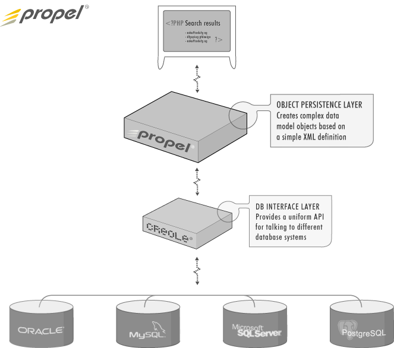

Propel zapewnia system do utrwalania obiektów w bazie danych, system do jej przeszukiwania i pobierania z niej obiektów. Propel pozwala na wykonywanie kompleksowych zapytań i manipulacji na bazie danych bez ani jednej linijki kodu SQL. Propel czyni aplikacje łatwiejszymi do napisania, wydania, a także pozwala na łatwą migrację pomiędzy różnymi bazami danych.
Propel można opisać jako odwzorowanie relacyjno-obiektowe, warstwę DAO lub warstwę utrwalającą i pozyskującą obiekty. Propel jest portem Apache Torque. Bazując na doświadczeniu i rozwiązaniach projektu Torque, Propel dostarcza pełny i inteligentny system zarządzania danymi, przy minimalnych kosztach wydajności Twojej aplikacji PHP.
Dla obeznanych z wzorcami projektowymi - Propel implementuje głównie wzorzec Row Data Gateway wg. opisu Martina Fowlera, który odzwierciedla strukturę bazy danych.
Row Data Gateway oddaje w Twoje ręce obiekt wyglądający dokładnie tak, jak struktura rekordu w Twojej bazie danych, ale dostęp do tego rekordu odbywa się poprzez Twój język programowania. Wszystkie dane dotyczące operacji na źródle danych są ukryte za tym interfejsem.
To jednak nie wszystko. Propel generuje również klasy dla każdej tabeli. Posiadają one niektóre właściwości wzorca Table Data Gateway.
Table Data Gateway przechowuje kod SQL umożliwiający dostęp do pojedynczej tabeli, lub widoku: pobranie, wstawienie, aktualizacja i usunięcie. Inny kod wywołuje jego metody celem interakcji z bazą danych.
W Propelu klasy Table Data Gateway sa nazywane klasami Peer, podczas gdy klasy Row Data Gateway sa nazywane jednostkami, lub obiektami.
Propel, jako aplikacja, posiada dwa głowne komponenty (całkowicie rodzielne):
Środowisko uruchomieniowe dostarcza warstwę abstrakcji i enkapsulacji bazy danych dla logiki biznesowej. Klasy Propela reprezentują warstwę modelu w tradycyjnym MVC. Model ten został zaprojektowany tak, aby zawierał możliwość walidacji na każdym poziomie Twojej aplikacji. Poniższy diagram pokazuje, jak Propel współpracuje z Creole. Najwyższy poziom, to apliakcja napisana w PHP i może zawierac dowolną ilość innych warstw.

Istnieje kilka różnych implementacji warstwy danych zapewniejacych różne poziomy abstrakcji. Niektóre dostarczają abstrakcję do momentu, w którym musimy zadecydować, gdzie utrwalić obiekt. Propel bardzo dosłownie traktuje warstwę pozyskiwania i utrwalania danych. Model danych opisywany poprzez XML, bardzo blisko współpracuje ze strukturą bazy danych. Jednostki w Propelu są zawsze tabelami; związki pomiędzy nimi są określane poprzez klucze obce, a typy kolumn w Propelu są mocno związane z typami kolumn w warstwie bazy danych (Creole)
Co to oznacza w praktyce? Z jednej strony, jest łatwy do nauki i jednocześnie elastyczny. Możesz być pewien, że kiedy zaprojektujesz strukturę tabel w bazie danych, będzie ona w Propelu działać tak, jak tego oczekujesz. Również wydajność jest zmaksymalizowana poprzez użycie minimalnej ilości abstrakcji. Z drugiej strony, ze względu na to, że jednostki Propela to zawsze tabele, posiada efektywny i prosty model dziedziczenia, w którym wszystkie podklasy są mapowane do pojedyńczej tabeli. Niektóre operacje w Propelu wymagają dodatkowych kroków. Np. obsługa relacji wiele do wielu wymaga jawnego wskazania krzyżujących (cross-reference) się tabel w Twoim skrypcie PHP.
Mimo, że niektóre rozwiązania są mało eleganckie i niezbyt intuicyjne, to konieczność ich nauki jest rekompensowana elastycznością i wydajnością. Celem tego projektu jest dostarczenie narzędzia zwiększającego produktywność deweloperów, pozostającego przy tym na tyle lekkim rozwiązaniem, aby było użyteczne w aplikacjach PHP.
Istnieje sporo rozwiązań warstw utrwalających obiekty dla języka Java (Torque, Hibernate, Castor, oraz OJB to tylko kilka z nich). Jednak dla PHP istnieje zaledwie kilka rozwiązań dla PHP i to takich, które dostaczają zaledwie podstawowe funkcjonalności. Jezyk ten jest używany w coraz większych projektach i w coraz większej ilości można spotkać narzędzia wspomagające pracę z obiaktami i bazami danych. Poniżej znajdziecie kilka podobnych do Propela projektów, które sa w róznych stadiach rozwoju. Wszystkie dla PHP (prace nad niektórymi rozpoczęto później niż nad Propelem):
W skrócie - zdecydowaliśmy się stworzyć Propel, bo chcieliśmy stworzyć narzędzie, które umożliwiłoby łatwe tworzenie aplikacji bazodanowych bez utraty elastyczności. Poniżej przedstawiamy powody, dla których nie zdecydowalismy się na użycie wymienionych wcześniej rozwiązań. Staralismy się obiektywnie je opisać, ale ostateczną ocenę pozostawiamy Tobie
ALYOOP
ALYOOP to prosty framwork DAO napisany w PHP5. Nie wiemy, czy jest dalej rozwijany.
Niektóre różnice:
DB_DataContainer
DB_DataContainer to zgodny z PEAR pakiet, który dostarcza prosty framework DAO
Niektóre różnice:
DB_DataObject
DB_DataObject to pakiet PEAR, który generuje trochę kodu i posiada podstawowe wsparcie dla obsługi relacji
Niektóre różnice:
DB_Table
DB_Table to kolejny pakiet PEAR, który dostarcza abstrakcję na poziomie tabel bazy danych.
Niektóre różnice:
EasyORM
Nie testowaliśmy EasyORM, bo to jest rozwiązanie tylko dla MySQL.
Metastorage
Metastorage to najprawdopodobniej najbardziej kompletny przykłąd ORM'a z dotychczas opisanych - jest trochę podobny do Propela, bo np. używa XML'a do opisu modelu i wymaga fazy budowania do stworzenia klas PHP.
Niektóre różnice:
Propel jest naprawdę prosty z użyciu. W najprostszym przypadku musisz jedynie zdefiniować model w XML, określić właściwości kompilacji (np. dla jakiej bazy danych będzie ona wykonana), a potem "skompilować" ten model. Kompilacja stworzy pliki z definicjami SQL i co najważniejsze - klasy PHP, które są potrzebne, abyś mógł używać bazy danych z poziomu swojej aplikacji.
To nie jest tutorial (ten będzie później), ale możesz to potraktować jako wstęp to tego, jak przebiega praca z Propelem:
Na początku prosta definicja modelu:
<?xml version="1.0" encoding="ISO-8859-1"?>
<database name="bookstore">
<table name="book">
<column name="book_id" type="INTEGER" required="true" primaryKey="true"/>
<column name="title" type="VARCHAR" size="50" required="true" />
</table>
</database>
Kompilacja tego modelu wytworzy kilka klas PHP, które możesz użyć do dodania i pobrania danych z tabeli "Book". Propel wygeneruje też kilka kilka pustych podklas, dzięki którym będziesz mógł zmienić zachowanie, bez ingerowania w wygenerowany kod (który mógłby zostać nadpisany, gdybyś ponownie wygenerował swój model).
| Klasa | Przeznaczenie |
|---|---|
| BaseBook, Book | BaseBook reprezentuje bazową klasę dla wiersza z tabeli book. Book to pusta klasa, w której możesz dodać własny kod. Zapytania zwracaja tablice z obiektami klasy Book. |
| BaseBookPeer, BookPeer | Tzw. klasy Peer, to klasy zawierające statyczne metody, które wywołują zapytania i pozwalają manipulować tabelą Book. Wszystkie referencje muszę być skierowane do klasy BookPeer, która jest pustą podklasą (abyś ewentualnie mógł dodać tam swój kod) BaseBookPeer |
| BookMap | Zawiera mapę bazy danych dla tabeli Book. Zamiast wykonywać powolne zapytania do bazy o właściwości jakiejś tabeli w czasie wykonywania żądania, Propel kompiluje mapę takiej tabeli, dzięki czemu ma o wiele szybszy dostęp do informacji o niej. |
W swojej aplikacji PHP możesz dołączyć klasę Book tak jak zwykłą klasę. Za zamkniętymi drzwiami, Propel wykona wszystkie działania - np. mysql_query()
// Przykład używający obiektów biznesowych
$b = new Book();
$b->setTitle("War & Peace");
$b->save();
// klasa "peer", to statyczna klasa obługująca np. zapytania SQL
$c = new Criteria();
$c->add(BookPeer::TITLE, "War%", Criteria::LIKE);
$c->setLimit(10);
$books = BookPeer::doSelect($c);
foreach($books as $book) {
print "<br/>" . $book->getTitle();
}
Oczywiście ten przykład jest bardzo prosty - większość baz danych jest badziej skomplikowana niż nasza tabela Book. Daje to jednak pojęcie o tym, jak łatwo jest wdrożyć Propel do Twojej aplikacji PHP.